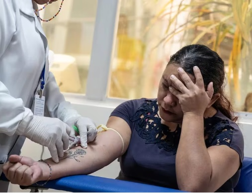

Indices actuales de provincias mas afectadas
Tasas cada 100.000 HAB.
- Sgo.del Estero ....1.442
- Tucuman ............1.384
- Salta ...................1.005
- Chaco ...................807
- Juuy ......................696
- Sanata Fe ..............605
- CABA ..................405
- Catamarca ............254
- Córdoba ...............204
- Corrientes ............107
- La Rioja ..............107
- Formosa ................90
- Buenos Aires ........58
- Entre Rios.............39
- Misiones...............20
- T del Fuego..........15
- San Luis...............12
- La Pampa..............8
- Santa Cruz............8
Actualización de la situación epidemiológica semanal
Hasta el 15 de abril de 2024, Argentina ha notificado 333.084 casos de dengue, de los cuales 315.942 corresponden a 2024. La incidencia acumulada para la temporada es de 708 casos por cada cien mil habitantes.
- En la región del NEA se registra un descenso de casos desde la SE04/24 hasta la última semana analizada. Se destaca la continuidad de casos durante toda la temporada y el ascenso temprano, a partir de la SE40/2023, registrándose el pico en la SE04/24. Las 4 provincias presentan un número de casos sostenido con tendencia al descenso.
- En la región Centro, se observa una tendencia general al descenso del número de casos, presentando casi todas las provincias que la componen el mismo patrón. El pico en esta región se registró en la SE12. Sin embargo, Santa Fe volvió a presentar un aumento de casos en la SE14 que no supera el pico máximo alcanzado en SE10.
- En la región del NOA, si bien el pico de casos en la región se registró en la SE12, se observa un aumento en el número de casos en la SE14 respecto a la anterior, a expensas de Jujuy, Salta, La Rioja y Santiago del Estero.
- En la región Cuyo, se identifica un pico de casos en la SE14 en las 3 jurisdicciones. Se observa en el gráfico de San Juan un aumento significativo de los casos en la SE15 que responde a dos fenómenos: por un lado, representa casos correspondientes a semanas epidemiológicas previas con fecha de apertura en SE15 y, por otro lado, a un aumento real de casos.
- En la región Sur, La Pampa es la única provincia con circulación viral de dengue confirmada, presentando un pico de casos en la SE12 y persistencia de casos hasta el cierre de este informe. El resto de las provincias de la región no presentan circulación viral de dengue.
Crisis
La Argentina está enfrentando la peor epidemia de dengue desde el momento de la reemergencia de esa infección en 1997, en cuanto a personas afectadas, casos graves y muertes. Ya 19 de las 24 jurisdicciones que conforman el país tienen circulación autóctona del virus que causa la enfermedad, y se ha propagado a más ciudades a través de personas que viajan a otras urbes y al contar con poblaciones de mosquitos Aedes aegypti en esas zonas.
Más información oficial sobre la situación epidemiológica:
Infocompartir esta informacion en